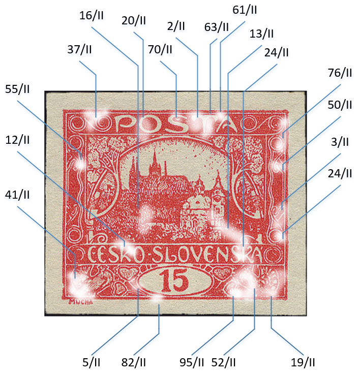
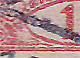
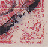
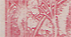

15h (7) – Velos y manchas
Catálogo actualizado continuamente de las manchas y velos de fabricación en los sellos de 15h (POFIS n.º 7). Sobre todo la primera y la segunda plancha de impresión son ricas en claras. A continuación, el resumen de la segunda plancha de impresión – las posiciones destacadas con manchas/velos y sus fases evolutivas documentadas.




******* Voy completándolo poco a poco *******
Las distintas posiciones de la segunda plancha también puede verlas en la galería de posiciones de la plancha II del web 15h.